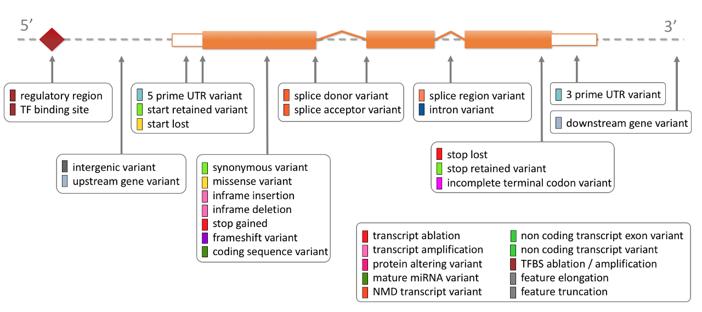

For each variant that is mapped to the reference genome, we identify all overlapping Ensembl transcripts. We then use a rule-based approach to predict the effects that each allele of the variant may have on each transcript. The set of consequence terms, defined by the Sequence Ontology (SO), that can be currently assigned to each combination of an allele and a transcript is shown in the table below. Note that each allele of each variant may have a different effect in different transcripts.
This approach is applied to all germline variants and somatic mutations stored in the Ensembl databases. The resulting consequence type calls, along with information determined as part of the process, such as the cDNA and CDS coordinates, and the affected codons and amino acids in coding transcripts, are stored in the Ensembl Variation database and displayed on our website. For human and mouse variants any overlap with regulatory features is also displayed. For structural variants consequence terms are calculated on the fly for display on our website or API access. You can use this pipeline to annotate your own data via VEP. By default, VEP will include upstream and downstream annotations for variants within 5kb of a nearby feature, see --distance in VEP options.
See below a diagram showing the location of each display
term relative to the transcript structure:

The terms in the table below are shown in order of severity (more severe to less severe) as estimated by Ensembl, and this ordering is used on the website summary views. This ordering is necessarily subjective and API and VEP users can always get the full set of consequences for each allele and make their own severity judgement. The IMPACT rating is a separate rating given for compatibility with other variant annotation tools (e.g. snpEff).
[[SCRIPT::EnsEMBL::Web::Document::HTML::ConsequenceTable]]Missense variants may have further annotation on their effect on the protein function, using a number of algorithms.